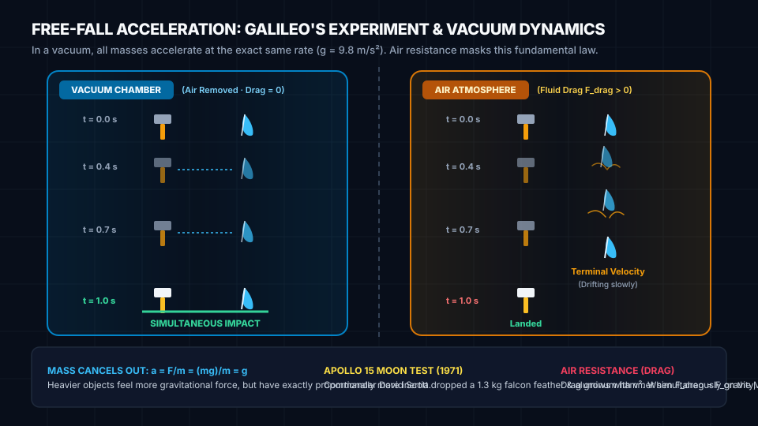

Physics · Mechanics · Lesson 08
Falling & Gravity: Free Fall, Vacuum & Terminal Velocity
Why do a 1.3-kilogram steel hammer and a delicate bird feather drop in perfect synchronization inside a vacuum chamber? Explore how Galileo overturned two millennia of scientific assumption, dive into the calculus of air resistance, and test gravitational free-fall across planets in our interactive laboratory.
1. The 2,000-Year-Old Mistake: Aristotle vs. Galileo
For nearly two thousand years following the ancient Greek philosopher Aristotle, common sense dictated that heavier bodies fall faster than lighter ones in direct proportion to their weight. If you drop a heavy cobblestone and a feather from the roof of a house on Earth, the cobblestone crashes to the earth while the feather floats lazily through the breeze.
In the late 16th century, the Italian physicist and astronomer Galileo Galilei exposed the fatal logical contradiction at the heart of Aristotle's claim with an ingenious thought experiment:
- Prediction A: The lighter 1-pound stone falls slower, so it acts like a parachute or brake, slowing the 10-pound stone down so the pair falls slower than 10 pounds alone.
- Prediction B: Tying them together forms a single 11-pound object. Since 11 pounds is heavier than 10 pounds, the system must fall faster than 10 pounds alone!

The Equivalence of Inertial and Gravitational Mass
Why does mass vanish from the acceleration equation? Newton's Second Law tells us that the net force required to accelerate an object is proportional to its inertial mass (\(m_i\)):
Meanwhile, the gravitational pull Earth exerts on that body is governed by its gravitational mass (\(m_g\)):
Because inertial mass and gravitational mass are identically equal (\(m_i \equiv m_g\)) — a profound physical principle known as the Weak Equivalence Principle that Albert Einstein later transformed into General Relativity — the mass terms cancel out completely:
2. Interactive Free Fall & Air Resistance Laboratory
Test Galileo's discovery for yourself. Select two test objects, configure the planetary atmosphere or pull a total vacuum, adjust the drop height, and observe the live motion, force vectors, and velocity accumulation in real time.
3. The Apollo 15 Demonstration: Galileo Proven on the Moon
On Earth, the atmosphere always gets in the way. Even if you drop a flat sheet of paper and a crumpled ball of identical paper, the crumpled ball reaches the floor first simply because its cross-sectional area catches less air.
On August 2, 1971, at the conclusion of the Apollo 15 moonwalk at Hadley Rille, NASA Commander David Scott stood in the airless vacuum of space before a live television camera. In one hand he held a 1.32 kg aluminum geological hammer; in the other, a 0.03 kg white falcon feather. Watch what happened when he released them simultaneously:
4. Kinematics of Free Fall (The Math)
When an object falls under constant gravitational acceleration \(g\) with negligible air resistance, its motion is governed by the three foundational 1D kinematic equations (taking downward as the positive direction with initial release from rest \(v_0 = 0\)):
Worked Example: Dropping a Rock from a 45-Meter Cliff
Suppose you release a smooth stone from rest (\(v_0 = 0\)) off a cliff of height \(h = 44.1\text{ m}\) on Earth. Neglecting air resistance, how long does it take to strike the ground, and what is its impact speed?
Step 1: Solve for fall time \(t\) using \(y = \frac{1}{2} g t^2\)
t² = 44.1 / 4.9 = 9.0
t = √9.0 = 3.00 seconds
Step 2: Solve for final velocity \(v\) using \(v = g \cdot t\)
Step 3: Verification via Conservation of Energy
Interactive Free Fall Calculator
Enter any drop height and choose a celestial body to calculate the theoretical free-fall time and impact speed in a vacuum:
5. Aerodynamic Drag & Terminal Velocity
In our everyday world surrounded by air, objects do not accelerate indefinitely. As a falling body speeds up, it must collide with and push aside millions of air molecules every second. This fluid friction creates an upward aerodynamic drag force \(F_d\):
Notice the \(v^2\) term! If you double your falling speed, drag increases by a factor of four. If you triple your speed, drag shoots up by nine. Eventually, the upward drag force grows so large that it equals the downward gravitational force:
At this equilibrium point, net force is zero (\(F_{\text{net}} = 0\)), acceleration drops to zero (\(a = 0\)), and the body cruises downward at a constant maximum speed called terminal velocity (\(v_t\)):
Real-World Terminal Velocities
Because terminal speed depends directly on mass, frontal area, and aerodynamic shape, different objects reach vastly different terminal speeds in Earth's atmosphere:
6. Check Your Understanding
Easy1. Apollo 15 Drop: An astronaut on the Moon drops a 1.32 kg hammer and a 0.03 kg feather from a height of 1.5 meters in the lunar vacuum. Which object strikes the lunar regolith first?
Hint: The Moon has no atmosphere (\(\rho = 0\)). Without air resistance, gravitational acceleration \(a = g\) is identical for all masses!
Easy2. Free Fall Speed: A steel ball is dropped from rest into a vacuum drop tube on Earth (\(g = 9.8\text{ m/s}^2\)). What is its velocity after falling freely for exactly \(3.5\text{ seconds}\)? Enter the speed in m/s (e.g. 34.3).
Hint: Use \(v = g \cdot t = 9.8\text{ m/s}^2 \times 3.5\text{ s} = 34.3\text{ m/s}\).
Medium3. Well Depth: You drop a coin into an old vertical wishing well. Exactly \(2.4\text{ seconds}\) later, you hear the splash of the coin striking the water below. Assuming air resistance is negligible, calculate the depth of the well in meters (to 1 decimal place).
Hint: Use \(y = \frac{1}{2} g t^2 = 0.5 \times 9.8 \times (2.4)^2 = 0.5 \times 9.8 \times 5.76 \approx 28.22\text{ m}\).
Medium4. Acceleration at Terminal Velocity: A skydiver in Earth's atmosphere reaches their terminal velocity of \(54\text{ m/s}\). What is their net acceleration in m/s² while falling at terminal velocity?
Hint: At terminal velocity, upward drag equals downward gravity (\(F_d = F_g\)). Because net force is zero, net acceleration \(a = F_{\text{net}}/m = 0\text{ m/s}^2\)!
Hard5. Martian Drop Time: On the surface of Mars, gravity is \(g = 3.72\text{ m/s}^2\). A robotic probe drops a seismic sensor from a stationary hover at an altitude of \(18.6\text{ meters}\). How many seconds does it take to strike the ground in the thin Martian vacuum? (Enter to 2 decimal places, e.g. 3.16).
Hint: Rearrange \(y = \frac{1}{2} g t^2 \implies t = \sqrt{2y / g} = \sqrt{2 \times 18.6 / 3.72} = \sqrt{37.2 / 3.72} = \sqrt{10} \approx 3.16\text{ s}\).